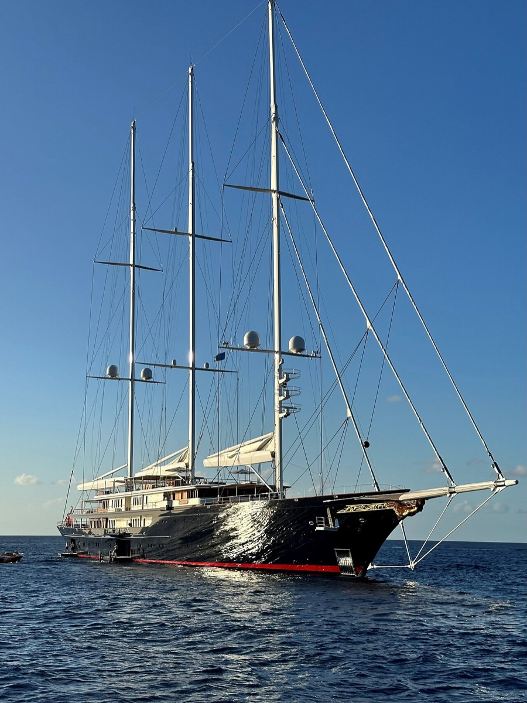

Primary yacht · three-masted schooner
KORU
A steel-hulled sailing yacht built in the Netherlands by Oceanco as yard number Y721 and delivered in 2023. Dykstra drew the naval architecture and exterior; Mlinaric, Henry & Zervudachi did the interior. Oceanco has not confirmed the owner; the link to Jeff Bezos is publicly reported.
- Length
- 125.8 m overall (often quoted as 127 m)
- Beam
- 17.2 m
- Gross tonnage
- 3,493 GT
- Guests
- 18 in 9 cabins
- Crew
- 40
- Top speed
- 17 kn
- Builder
- Oceanco · 2023
- Reported cost
- About $500 million (estimate, never confirmed)
Sources: specifications from the BOAT International superyacht directory; cost is Bloomberg's May 2021 estimate, as reported by CNN.